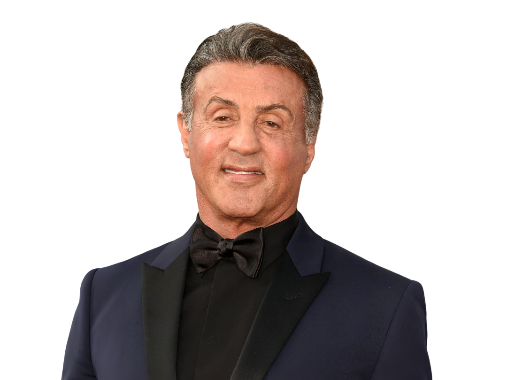
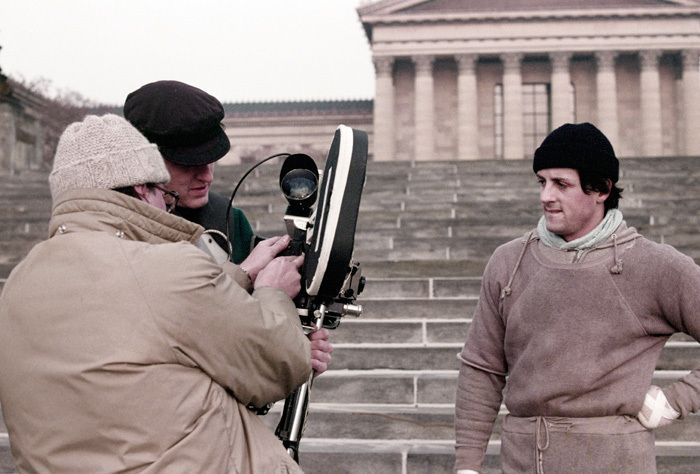
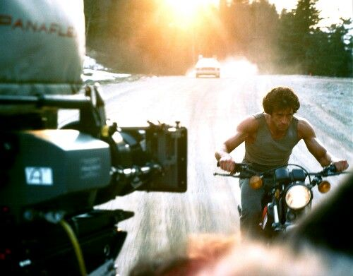
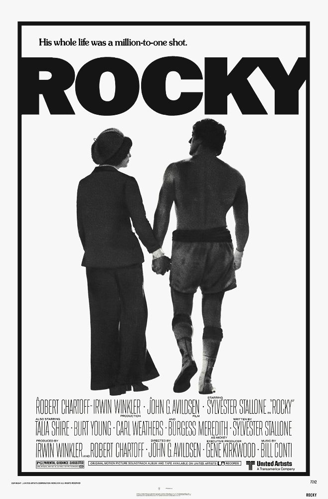

Quem é
Sylvester
Stallone?
Sou itálico-americano, natural de Nova York. Nasci em 6 de julho de 1946. Desde criança sempre fui muito
interessado em teatro e tinha o desejo de usar essa paixão para contar histórias.
Lembro que quando era
criança os outros meninos tiravam sarro do meu sonho por conta do meu rosto. Acontece que sofri uma
paralisia facial quando nasci e por muitos anos as pessoas me chamavam de "bobão" e que ninguém ia
querer me ver atuando.

Antes da fama...
Quando fiquei jovem, persegui o meu sonho. Confesso que foi difícil. Passei muito tempo tentando
encontrar algum papel, mas nada de bom vinha pra mim. Acredita que a minha primeira atuação foi de
um filme pornográfico?
Cheguei inclusive a vender o meu amigo Butkus. Eu o amava, mas infelizmente
as contas não paravam de chegar e não conseguia alimentar aquele monstro. Foi difícil ter que
vendê-lo, mas sabia que estaria em boas mãos.
Rocky, Um Lutador

O filme que mudou a minha vida
Aos meus quase 30 anos vivia uma vida miserável. Não tinha onde viver, o que comer nem o que
vestir. Tentava virar ator, mas nunca conseguia bons papéis. Sempre fui o figurante das
histórias. Chegava a um ponto que eu perguntava a Deus: Pai, por quê isso está acontecendo
comigo? Orava todas as noites pedindo que alguma oportunidade aparecesse. Deus cumpriu com a
sua promessa, mas não como eu esperava.
Uma noite eu fui à casa de um amigo assistir
uma luta de Muhammad Ali contra Chuck Wepner para descansar a cabeça. O que mais me
surpeendeu não foram os golpes de Ali, mas a incrível resistência de Wepner, que caía e se
levantava.
Naquele dia, me veio a ideia de criar um filme de um lutador azarado que
recebe a grande chance de sua vida. Nascia assim o lutador Rocky Balboa, ou como gosto de
chamá-lo, Garanhão Italiano.

A minha primeira luta do Rocky não aconteceu num ringue, mas em uma mesa de negócios. Quando ofereci
o roteiro para as produtoras da Filadélfia, os executivos amaram, mas não me queriam como
protagonista. Acontece que eu precisava ser o protagonista, e não podia deixar alguém roubar o que
era meu. Após algumas reuniões fechei um acordo de protagonizar Rocky Balboa por $300.000 e com um
orçamento de $1M.
Confesso que foi um desafio gravar Rocky com um orçamento baixo como esse.
Por isso pedi que os atores usassem suas próprias roupas e que capturássemos toda a real atmosfera
da Filadélfia. Nada de musiquinha alegre vendendo o sonho americano - aqui nós mostramos mendigos,
clubes de luta e beberrões.

Rambo - First Blood
Depois do sucesso de Rocky, sentia que precisava de mais inspiração - não podia viver a minha vida
dependendo de um único personagem. Após um dia de tédio, resolvi ler First Blood,
do escritor David Morell. O livro era um romance que contava a história de John Rambo, um veterano
da guerra do Vietnã que se via perdido em uma cidade esquisita. O desfecho? Mortes e mais
mortes.
O personagem era uma lenda, mas pensei: será que tudo o que ele faz é matar todos a
sangue frio? Foi aí que decidi reimaginar a história com um novo Rambo com um pouco mais de
sentimentos, que evita matar os seus inimigos - fazendo só quando necessário.
O mundo foi à
loucura com o Rambo. Minha vida agora se encontrava entre um ringue de boxe e um campo de guerra
cheio de vietnamitas, russos e ucranianos. Meu maior arrependimento foi não ter posto Dolph Lundgren
para contracenar comigo após Rocky IV. Todos amaram o Drago, e tinha certeza que amariam o seu
personagem.
Filmes escritos e dirigitos por mim
Saga Rocky

.jpeg)
.jpeg)
.jpeg)
.jpeg)
.jpeg)
Saga Rambo
.jpeg)


.jpeg)